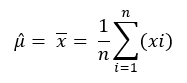
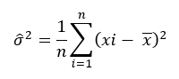

ChangePointDetection
The change-point search method for retrospective change-point detection, binary segmentation, uses this procedure:
- Search the data for the first change point.
- At that change point, split the data into two parts.
- In each part, select the change point with the minimum loss.
- Repeat this procedure until there are either no new change points or the maximum number of change points.
Binary segmentation is an approximation method, because the change point is decided with only part of the data. However, this method is efficient and has an O(n log n) computational cost, where n is the number of data points.

Taking normal distribution as an example, the change-point problem is to test the following null hypothesis:
H0:μ = μ1 = μ2 = … = μn and σ2 = σ12 = σ22 = … σn2
as opposed to the alternatives,
H1:μ1 = … = μk1 ≠ μk1+1 = … μk2 ≠ ... ≠ μkq+1 = ...= μn
and
σ12 = … = σk12 ≠ σk1+12 = … = σk22 ≠ ... ≠ σkq+12 = … = σn2
Binary segmentation performs the following tests in each iteration:
H1:μ1 = … = μk1 ≠ μk1+1 = … = μn
and
σ12 = … = σk12 ≠ σk1+12 = … σn2
These are the formulas for the log likelihood functions H0 and H1:

These are the formulas for the maximum likelihood estimation of μ and σ2:


From the preceding formulas, the binary segmentation algorithm computes max LogL1 by giving k different values. Then, to check for a change point, the algorithm compares the difference between max LogL1 and LogL0 to the penalty value.
If the algorithm detects a change point, it adds that change point to its list of candidate change points and splits the data into two parts. From the candidate change points that the algorithm finds in the two parts, it selects the one with the minimum loss.
The ChangePointDetection function detects change points in a stochastic process or time series, using retrospective change-point detection, implemented with these algorithms:
- Search algorithm: binary search
- Segmentation algorithm: normal distribution and linear regression
Use this function when the input data can be stored in memory and the application does not require a real-time response. If the input data cannot be stored in memory, or the application requires a real-time response, use the function ChangePointDetectionRT.
ChangePointDetection Syntax
Version 1.2
SELECT * FROM ChangePointDetection (
ON { table | view | (query) } PARTITION BY partition_expr ORDER BY order_by_expr
USING
TargetColumn ('target_column')
[ Accumulate ({ 'accumulate_column' | accumulate_column_range }[,...]) ]
[ SegmentationMethod ({ 'normal_distribution' | 'linear_regression' }) ]
[ SearchMethod ('binary') ]
[ MaxChangeNum (maximum_change_point_count) ]
[ Cost ({ 'BIC' | 'AIC' | threshold }) ]
[ OutputType ({ 'CHANGEPOINT' | 'VERBOSE' | 'SEGMENT' }) ]
) AS alias;ChangePointDetection Syntax Elements
- TargetColumn
- Specify the name of the input table column that contains the time series data.
- Accumulate
- Specify the names of the input table columns to copy to the output table.TipTo identify change points in the output table, specify the columns that appear in partition_exp and order_by_exp.
- SegmentationMethod
- [Optional] Specify the segmentation method:
'normal_distribution'(Default)In each segment, data is in normal distribution. 'linear_regression'In each segment, data is in linear regression. - SearchMethod
- [Optional] Specify the search method, binary search.
- MaxChangeNum
- [Optional] Specify the maximum number of change points to detect.
- Cost
- [Optional] Specify the penalty function, which is used to avoid over-fitting:
Option Condition for Change Point Existence Condition for Normal Distribution and Linear Regression 'BIC'(Default)ln(L1)−ln(L0) > (p1-p0)*ln(n)/2 (p1-p0)*ln(n)/2 = ln(n) 'AIC'ln(L1)−ln(L0) > p1-p0 p1-p0 = 2
threshold, a DOUBLE PRECISION value Function compares specified value to ln(L1)−ln(L0).
L1 and L0 are the maximum likelihood estimation of hypotheses H1 and H0.
For normal distribution, the definition of Log(L1 ) and Log(L0) are in ChangePointDetection. p is the number of additional parameters introduced by adding a change point. p1 and p0 represent this parameter in hypotheses H1 and H0, respectively.
- OutputType
- [Optional] Specify the output table columns. See ChangePointDetection Output.
ChangePointDetection Input
Input Table Schema
The table can have additional columns, but the function ignores them.
| Column | Data Type | Description |
|---|---|---|
| partition_column | Any | [Column appears once for each partition_column specified in partition_expr.] Column by which input table is partitioned. |
| sort_column | Any | [Column appears once for each sort_column specified in order_by_expr.] Column by which input table is sorted. |
| target_column | DOUBLE PRECISION | Contains time series data. |
| accumulate_column | Any | [Column appears once for each specified accumulate_column.] Column to copy to output table. |
ChangePointDetection Output
The output table schema depends on the OutputOption syntax element.
Output Table Schema, OutputOption ('CHANGEPOINT') (Default)
The table has one row for each change point.
| Column | Data Type | Description |
|---|---|---|
| accumulate_column | Same as in Input table | [Column appears once for each specified accumulate_column.] Column copied from input table. |
| cptid | INTEGER | Changepoint identifier of sequence. For each partition, identifiers range from 1 to n, where n is the number of changepoints for the partition. |
Output Table Schema, OutputOption ('VERBOSE')
The table has one row for each change point.
| Column | Data Type | Description |
|---|---|---|
| accumulate_column | Same as in Input table | [Column appears once for each specified accumulate_column.] Column copied from input table. |
| cptid | INTEGER | Changepoint identifier of sequence. For each partition, identifiers range from 1 to n, where n is the number of changepoints for that partition. |
| difference | DOUBLE PRECISION | Difference H1-H0. |
Output Table Schema, OutputOption ('SEGMENT')
The table has one row for each segment. For k changepoints, there are k+1 segments.
| Column | Data Type | Description |
|---|---|---|
| accumulate_column# | Any | [Column appears once for each specified accumulate_column.] Segment starting point. |
| accumulate_column | Same as in Input table | [Column appears once for each specified accumulate_column.] Column copied from input table. |
| segid | INTEGER | Segment identifier. |
ChangePointDetection Examples
ChangePointDetection Example: Two Series, Default Options
Input
Input table finance_data2 contains two time series of finance data.
| sid | id | start_time_column | end_time_column | expenditure | income | investment |
|---|---|---|---|---|---|---|
| 1 | 1 | 1967-06-30 | 2007-03-31 | 415 | 451 | 180 |
| 1 | 2 | 1967-06-30 | 2007-03-31 | 421 | 465 | 179 |
| 1 | 3 | 1967-06-30 | 2007-03-31 | 434 | 485 | 185 |
| 1 | 4 | 1967-06-30 | 2007-03-31 | 448 | 493 | 192 |
| 1 | 5 | 1967-06-30 | 2007-03-31 | 459 | 509 | 211 |
| 1 | 6 | 1967-06-30 | 2007-03-31 | 458 | 520 | 202 |
| 1 | 7 | 1967-06-30 | 2007-03-31 | 479 | 521 | 207 |
| 1 | 8 | 1967-06-30 | 2007-03-31 | 487 | 540 | 214 |
| 1 | 9 | 1967-06-30 | 2007-03-31 | 497 | 548 | 231 |
| 1 | 10 | 1967-06-30 | 2007-03-31 | 510 | 558 | 229 |
| 1 | 11 | 1967-06-30 | 2007-03-31 | 516 | 574 | 234 |
| 1 | 12 | 1967-06-30 | 2007-03-31 | 525 | 583 | 237 |
| 1 | 13 | 1967-06-30 | 2007-03-31 | 529 | 591 | 206 |
| 1 | 14 | 1967-06-30 | 2007-03-31 | 538 | 599 | 250 |
| 1 | 15 | 1967-06-30 | 2007-03-31 | 546 | 610 | 259 |
| ... | ... | ... | ... | ... | ... | ... |
SQL Call
SELECT * FROM ChangePointDetection (
ON finance_data2 PARTITION BY sid ORDER BY id
USING
TargetColumn ('expenditure')
Accumulate ('sid', 'id', 'expenditure')
) AS dt;Output
sid id expenditure cptid --- -- ----------- ----- 1 3 434.0 1 1 5 459.0 2 1 7 479.0 3 1 10 510.0 4
Download a zip file of all examples and a SQL script file that creates their input tables from the download tab  in the left pane.
in the left pane.
ChangePointDetection Example: One Series, Default Options
Input
The following diagram represents the input. The input signal is like a clock signal whose values can represent a cyclic recurrence of an event (for example, electric power consumption at certain periods or sequence, pulse rate, and so on).
| sid | id | val |
|---|---|---|
| 1 | 1 | 10.8308 |
| 1 | 2 | 10.07182 |
| 1 | 3 | 10.30902 |
| 1 | 4 | 10.01128 |
| 1 | 5 | 10.83433 |
| 1 | 6 | 10.0189 |
| 1 | 7 | 10.8702 |
| 1 | 8 | 10.70688 |
| 1 | 9 | 10.72465 |
| 1 | 10 | 10.76334 |
| 1 | 11 | 100.9431 |
| 1 | 12 | 100.245 |
| 1 | 13 | 100.8667 |
| 1 | 14 | 100.0768 |
| 1 | 15 | 100.7646 |
| 1 | 16 | 100.0001 |
| 1 | 17 | 100.3316 |
| 1 | 18 | 100.8994 |
| 1 | 19 | 100.5965 |
| 1 | 20 | 100.1943 |
| 1 | 21 | 10.24228 |
| 1 | 22 | 10.78137 |
| 1 | 23 | 10.90752 |
| 1 | 24 | 10.02013 |
| 1 | 25 | 10.46117 |
| 1 | 26 | 10.08672 |
| 1 | 27 | 10.33539 |
| 1 | 28 | 10.0157 |
| 1 | 29 | 10.40867 |
| 1 | 30 | 10.17071 |
| 1 | 31 | 100.3789 |
| 1 | 32 | 100.2254 |
| 1 | 33 | 100.1049 |
| 1 | 34 | 100.9242 |
| 1 | 35 | 100.6543 |
| 1 | 36 | 100.5676 |
| 1 | 37 | 100.2341 |
| 1 | 38 | 100.9213 |
| 1 | 39 | 100.334 |
| 1 | 40 | 100.8727 |
SQL Call
SELECT * FROM ChangePointDetection (
ON cpt PARTITION BY sid ORDER BY id
USING
TargetColumn ('val')
Accumulate ('sid', 'id')
) AS dt;Output
sid id cptid --- -- ----- 1 8 1 1 11 2 1 21 3 1 31 4 1 34 5
Download a zip file of all examples and a SQL script file that creates their input tables from the download tab in the left pane.
ChangePointDetection Example: One Series, VERBOSE Output
Input
- Output table of ChangePointDetection Example: One Series, Default Options
SQL Call
SELECT * FROM ChangePointDetection (
ON cpt PARTITION BY sid ORDER BY id
USING
TargetColumn ('val')
Accumulate ('sid', 'id')
OutputType ('VERBOSE')
) AS dt;Output
sid id cptid difference --- -- ----- ------------------ 1 8 1 7.4734790324760105 1 11 2 97.35746106876692 1 21 3 48.67501782818529 1 31 4 52.08839257625203 1 34 5 3.7188850706639904
Download a zip file of all examples and a SQL script file that creates their input tables from the download tab in the left pane.
ChangePointDetection Example: One Series, Cost 10
Input
- Output table of ChangePointDetection Example: One Series, Default Options
SQL Call
SELECT * FROM ChangePointDetection (
ON cpt PARTITION BY sid ORDER BY id
USING
TargetColumn ('val')
Accumulate ('sid', 'id')
Cost (10)
) AS dt;Output
sid id cptid --- -- ----- 1 11 1 1 21 2 1 31 3
Download a zip file of all examples and a SQL script file that creates their input tables from the download tab in the left pane.
ChangePointDetection Example: One Series, SEGMENT Output, Cost 10
Input
- Output table of ChangePointDetection Example: One Series, Default Options
SQL Call
SELECT * FROM ChangePointDetection (
ON cpt PARTITION BY sid ORDER BY id
USING
TargetColumn ('val')
Accumulate ('sid', 'id')
Cost (10)
OutputType ('SEGMENT')
) AS dt;Output
sid_s id_s sid id segid
----- ---- --- -- -----
1 1 1 10 1
1 11 1 20 2
1 21 1 30 3
1 31 1 40 4
Download a zip file of all examples and a SQL script file that creates their input tables from the download tab in the left pane.
ChangePointDetection Example: One Series, Cost 20, Linear Regression
Input
- Output table of ChangePointDetection Example: One Series, Default Options
SQL Call
SELECT * FROM ChangePointDetection (
ON cpt PARTITION BY sid ORDER BY id
USING
TargetColumn ('val')
Accumulate ('sid', 'id')
Cost (20)
SegmentationMethod ('linear_regression')
) AS dt;Output
sid id cptid --- -- ----- 1 11 1 1 21 2 1 31 3
Download a zip file of all examples and a SQL script file that creates their input tables from the download tab in the left pane.